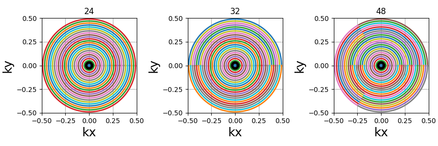

Note
Go to the end to download the full example code. or to run this example in your browser via Binder
2D Trajectories#
A collection of 2D non-Cartesian trajectories with analytical definitions.
Hereafter we detail and illustrate the different arguments used in the parameterization of 2D non-Cartesian trajectories. Since most arguments are redundant across the different patterns, some of the documentation will refer to previous patterns for explanation.
Note that most sources have not been added yet, but will be in the near future.
# External
import matplotlib.pyplot as plt
import numpy as np
# Internal
import mrinufft as mn
import mrinufft.trajectories.maths as mntm
from mrinufft import display_2D_trajectory
from utils import show_argument, show_trajectory
/volatile/github-ci-mind-inria/action-runner/_work/_tool/Python/3.10.14/x64/lib/python3.10/site-packages/cupy/_environment.py:487: UserWarning:
--------------------------------------------------------------------------------
CuPy may not function correctly because multiple CuPy packages are installed
in your environment:
cupy-cuda11x, cupy-cuda12x
Follow these steps to resolve this issue:
1. For all packages listed above, run the following command to remove all
existing CuPy installations:
$ pip uninstall <package_name>
If you previously installed CuPy via conda, also run the following:
$ conda uninstall cupy
2. Install the appropriate CuPy package.
Refer to the Installation Guide for detailed instructions.
https://docs.cupy.dev/en/stable/install.html
--------------------------------------------------------------------------------
warnings.warn(f'''
Script options#
These options are used in the examples below as default values for all trajectories.
# Trajectory parameters
Nc = 24 # Number of shots
Ns = 256 # Number of samples per shot
in_out = True # Choose between in-out or center-out trajectories
tilt = "uniform" # Choose the angular distance between shots
nb_repetitions = 6 # Number of strips when relevant
# Display parameters
figure_size = 6 # Figure size for trajectory plots
subfigure_size = 3 # Figure size for subplots
one_shot = True # Highlight one shot in particular
Circular patterns#
Radial#
The most basic non-Cartesian trajectory composed of straight lines with no customization arguments besides the common ones.
Arguments:
Nc (int): number of individual shotsNs (int): number of samples per shottilt (str, float): angle between each consecutive shot (in radians)(default "uniform")in_out (bool): define whether the shots should travel toward the center then outside (in-out) or not (center-out).(default False)
trajectory = mn.initialize_2D_radial(Nc, Ns, tilt=tilt, in_out=in_out)
show_trajectory(trajectory, figure_size=figure_size, one_shot=one_shot)
Nc (int)#
The number of individual shots, here straight lines, used to cover the k-space. More shots means better coverage but also longer acquisitions.
Ns (int)#
The number of samples per shot. More samples means the lines are split into more smaller segments, and therefore either the acquisition window is lengthened or the sampling rate is increased.
tilt (str, float)#
The angle between each consecutive shots, either in radians or as a
string defining some default mods such as uniform for
\(2 \pi / N_c\), or golden and mri golden for the different
common definitions of golden angles. The angle is automatically adapted
when the in_out argument is switched to keep the same behavior.
in_out (bool)#
It allows to switch between different ways to define how the shot should travel through the k-space:
in-out: starting from the outer regions, then passing through the center then going back to outer regions, often on the opposite side (radial, cones)
center-out or center-center: when
in_out=Falsethe trajectory will start at the center, but depending on the specific trajectory formula the path might end up in the outer regions (radial, spiral, cones, etc) or back to the center (rosette, lissajous).
Note that the behavior of tilt is automatically adapted to the changes to avoid having
to update it too when switching in_out.
Spiral#
A generalized function that generates algebraic spirals defined through the \(r = a \theta^n\) equation, with \(r\) the radius, \(\theta\) the polar angle and \(n\) the spiral power. Common algebraic spirals include Archimedes, Fermat and Galilean spirals.
Arguments:
Nc (int): number of individual shots. See radialNs (int): number of samples per shot. See radialtilt (str, float): angle between each consecutive shot (in radians).(default "uniform"). See radialin_out (bool): define whether the shots should travel toward the center then outside (in-out) or not (center-out).(default False). See radialnb_revolutions (float): number of revolutions performed from the center.(default 1)spiral (str, float): type of spiral defined through the above-mentionned equation.(default "archimedes")
trajectory = mn.initialize_2D_spiral(Nc, Ns, tilt=tilt, in_out=in_out)
show_trajectory(trajectory, figure_size=figure_size, one_shot=one_shot)
nb_revolutions (float)#
The number of revolutions performed from the center (i.e.performed twice for in-out trajectories).
spiral (str, float)#
The algebraic spiral power defined through \(n\) in the \(r = a \theta^n\) equality, with \(r\) the radius and \(\theta\) the polar angle. It defines the gradient behavior, and therefore the distance between consecutive points and the shape of the spiral. It does not affect the number of revolutions, but rather the curve length and point distribution. Spirals with small \(n\) (close to 0) tend to have radial behaviors around the center, and dedicate more points towards curved edges.
"archimedes" (1), "fermat" (0.5) and "galilean" (2) are available
as string options for convenience. Algebraic spirals with negative powers,
such as hyperbolic or lithuus spirals, are not considered relevant because
of their asymptotic behavior around the center.
patch_center (float)#
A slew rate anomaly is present at the center of algebraic spirals when their power is inferior to 1 (e.g. Fermats) and parameterized through their angles in the above equation.
To fix this problem, points at the center are re-arranged along the spiral until the gradients are monotically increasing from the center to the edges. This correction can be deactivated, but it is generally preferred to keep it.
The spiral path is not changed, but the density can be altered over the first few samples. However the difference is extremely subtle, as shown below.
Fibonacci spiral#
A non-algebraic spiral trajectory based on the Fibonacci sequence, reproducing the proposition from [CA99] in order to generate a uniform distribution with center-out shots.
The number of shots is required to belong to the Fibonacci sequence for the trajectory definition to be relevant.
Arguments:
Nc (int): number of individual shots. See radialNs (int): number of samples per shot. See radialspiral_reduction (float): factor used to reduce the automatic spiral length.(default 1)patch_center (bool): whether the spiral anomaly at the center should be patched.(default True)
Nc_fibonacci = mntm.get_closest_fibonacci_number(Nc)
trajectory = mn.initialize_2D_fibonacci_spiral(Nc_fibonacci, Ns)
show_trajectory(trajectory, figure_size=figure_size, one_shot=one_shot)
spiral_reduction (float)#
Factor used to reduce the automatic spiral length. In opposition to
initialize_2D_spiral, the number of spiral revolutions here
is automatically determined from Ns and Nc to match a uniform
density over the k-space sphere. It can lead to unrealistically
strong gradients, and therefore we provide this factor to reduce the
spiral length, which makes k-space denser along the shorter shots.
arguments = [0.5, 1, 2, 3]
function = lambda x: mn.initialize_2D_fibonacci_spiral(
Nc_fibonacci,
Ns,
spiral_reduction=x,
)
show_argument(function, arguments, one_shot=one_shot, subfig_size=subfigure_size)
patch_center (float)#
Similarly to algebraic spirals from initialize_2D_spiral,
the trajectory definition creates small anomalies at the center
that makes slew rate requirements needlessly high.
It is here related to the uniform density that requires central samples to be more strongly spaced than anywhere else because most shots start close to the center.
The spiral path can be altered over the first few samples, but generally the difference is extremely subtle, as shown below.
arguments = [False, True]
function = lambda x: mn.initialize_2D_fibonacci_spiral(
Nc_fibonacci,
Ns,
patch_center=x,
)
show_argument(function, arguments, one_shot=one_shot, subfig_size=subfigure_size)
Cones#
A radial-like trajectory zigzaging within cones over the k-space to offer a better coverage than radial with more customization parameters.
Arguments:
Nc (int): number of individual shots. See radialNs (int): number of samples per shot. See radialtilt (str, float): angle between each consecutive shot (in radians).(default "uniform"). See radialin_out (bool): define whether the shots should travel toward the center then outside (in-out) or not (center-out).(default False). See radialnb_zigzags (float): number of sinusoidal patterns over a center-out shot.(default 5)width (float): cone width factor, normalized to cover the k-space by default.(default 1)
trajectory = mn.initialize_2D_cones(Nc, Ns, tilt=tilt, in_out=in_out)
show_trajectory(trajectory, figure_size=figure_size, one_shot=one_shot)

nb_zigzags (float)#
The number of zigzags, or sinusoidal patterns present over a center-out shot (doubled overall for in-out trajectories)
width (float)#
The cone width normalized such that width = 1 corresponds to
non-overlapping cones covering the whole k-space circle, and
therefore width > 1 creates overlap between cone regions and
width < 1 tends to more radial patterns.
Sinusoide#
Another radial-like trajectory zigzaging similarly to cones, but over a whole band rather than cones reduced towards the center.
Arguments:
Nc (int): number of individual shots. See radialNs (int): number of samples per shot. See radialtilt (str, float): angle between each consecutive shot (in radians).(default "uniform"). See radialin_out (bool): define whether the shots should travel toward the center then outside (in-out) or not (center-out).(default False). See radialnb_zigzags (float): number of sinusoidal patterns over a center-out shot.(default 5). See coneswidth (float): shot width factor, normalized to cover the k-space by default.(default 1). See cones
trajectory = mn.initialize_2D_sinusoide(Nc, Ns, tilt=tilt, in_out=in_out)
show_trajectory(trajectory, figure_size=figure_size, one_shot=one_shot)
PROPELLER#
The PROPELLER trajectory is generally used along a specific reconstruction pipeline described in [Pip99] to correct for motion artifacts.
The acronym PROPELLER stands for Periodically Rotated Overlapping ParallEL Lines with Enhanced Reconstruction, and the method is also commonly known under other aliases depending on the vendor, with some variations: BLADE, MulitVane, RADAR, JET.
Arguments:
Nc (int): number of individual shots. See radialNs (int): number of samples per shot. See radialnb_strips (int): number of strips covering the k-space.(default "uniform"). See radial
trajectory = mn.initialize_2D_propeller(Nc, Ns, nb_strips=nb_repetitions)
show_trajectory(trajectory, figure_size=figure_size, one_shot=one_shot)
nb_strips (int)#
The number of individual strips dividing the k-space circle. It must divide
the number of shots Nc, and it is recommended to choose it such that the
ratio is even to cover the center.
Rings#
A pattern composed of concentric circles like a target, with each ring composed of one or more shots . This trajectory was initially proposed by Wu, Hochong H., Jin Hyung Lee, and Dwight G. Nishimura. MRI using a concentric rings trajectory. Magnetic Resonance in Medicine 59, no. 1 (2008): 102-112.
Arguments:
Nc (int): number of individual shots. See radialNs (int): number of samples per shot. See radialnb_rings (int): number of rings used to partition the k-space. It should be lower than or equal toNc.
trajectory = mn.initialize_2D_rings(Nc, Ns, nb_rings=Nc)
show_trajectory(trajectory, figure_size=figure_size, one_shot=one_shot)
nb_rings (int)#
The number of rings used to partition the k-space. It should always be lower than or equal to \(N_c\) as the implementation does not permit shots to cover several rings. Note that to fully sample a k-space circle, it should be set around \(FOV / (2 * resolution)\).
This implementation allows using more shots than rings, and it will automatically attribute the additional shots to the longest rings to reduce the top gradient amplitude and slew rate.
Rosette#
A repeating pattern composed of a single long curve going through the center multiple times and split into multiple shots.
Arguments:
Nc (int): number of individual shots. See radialNs (int): number of samples per shot. See radialin_out (bool): define whether the shots should travel toward the center then outside (in-out) or not (center-out).(default False). See radialcoprime_index (int): the index of the coprime factor used to define the shot curvature.(default 0)
trajectory = mn.initialize_2D_rosette(Nc, Ns, in_out=in_out)
show_trajectory(trajectory, figure_size=figure_size, one_shot=one_shot)
coprime_index (int)#
The index used to select a compatible coprime factor, parameterized such that trajectories keep \(N_c\) petals while increasing their width, i.e.increasing the curvature of the shots. This argument is quite complex with regard to the original formula in order to remain easily interpretable, user-friendly and optimal for MR use cases. For more details, please consult this Wikipedia page.
Polar Lissajous#
A polar version of the Lissajous curve, repeating pattern composed of a single long curve going through the center multiple times and split into multiple shots.
Arguments:
Nc (int): number of individual shots. See radialNs (int): number of samples per shot. See radialin_out (bool): define whether the shots should travel toward the center then outside (in-out) or not (center-out).(default False). See radialcoprime_index (int): the index of the coprime factor used # to define the shot curvature.(default 0)nb_segments (int): number of indepedent Lissajous curves covering different segments of the k-space.(default 1)
trajectory = mn.initialize_2D_polar_lissajous(Nc, Ns, in_out=in_out)
show_trajectory(trajectory, figure_size=figure_size, one_shot=one_shot)
coprime_index (int)#
The index used to select a compatible coprime factor, and impacting the shot curvature. For now, it is less trivial to select than for rosette but it will be updated in the future.
nb_segments (int)#
The number of Lissajous curves and segmented regions of the k-space. The
polar Lissajous curve natively puts emphasis on the center and along the
\(k_y\) axis, but can be parameterized to rather emphasize
nb_segments axes by reducing the coverage and duplicating a shorter
curve.
In the example below, nb_segments = 2 emphasizes the diagonals as
two Lissajous curves were created with each of them only covering two
opposing quarters of the k-space. It implies that nb_segments should
be a divider of Nc.
Non-circular patterns#
Waves#
An extension of the Cartesian line-by-line pattern that simply adds sinusoidal variations along the \(k_y\) axis.
Arguments:
Nc (int): number of individual shots. See radialNs (int): number of samples per shot. See radialnb_zigzags (float): number of sinusoide patterns along a line.(default 5)width (float): line width normalized such that a width of 1 corresponds to covering the full band without overlapping other bands.(default 1)
trajectory = mn.initialize_2D_waves(Nc, Ns, nb_zigzags=5)
show_trajectory(trajectory, figure_size=figure_size, one_shot=one_shot)
nb_zigzags (float)#
The number of sinusoidal patterns along a line, similar to cones and sinusoidal trajectories.
width (float)#
The line width normalized such that width = 1 corresponds to
non-overlapping lines covering (almost) uniformly the whole k-space, and
therefore width > 1 creates overlap between regions and
width < 1 tends to Cartesian patterns.
Also notes that increasing width squeezes the lines together
such that shots at the top and bottom borders dont spread ouf of the k-space,
resulting in non-covered areas with large widths. This behavior might be subject to
changes in future versions.
Lissajous#
The classic Lissajous patterns composed of a long single curve split into shots with different curve profiles and covering the whole k-space square. This pattern tends to be more dense on the edges, as opposed to most others. Note that the original pattern is much more complex but has been simplified to match MR purposes, with a balanced distribution and minimal overlapping.
Arguments:
Nc (int): number of individual shotsNs (int): number of samples per shotdensity (float): controls the pseudo-grid density and shot curvatures.(default "1")
trajectory = mn.initialize_2D_lissajous(Nc, Ns, density=1)
show_trajectory(trajectory, figure_size=figure_size, one_shot=one_shot)
density (float)#
It relates to both the curve length and curvature, normalized such that
density = 1 corresponds to pseudo-diagonal curves for any given \(N_c\).
References#
Pipe, James G. Motion correction with PROPELLER MRI: application to head motion and freebreathing cardiac imaging. Magnetic Resonance in Medicine 42, no. 5 (1999): 963-969.
Total running time of the script: (0 minutes 30.033 seconds)
Comments#
This specific curve has never been used in MRI to the best of our knowledge, and was inspired by the MathCurve page. It is heavily related to the rosette trajectory but parameterized in a much more complex way, as shown below when varying both
coprime_indexandnb_segments. It is not necessarily fit for MR applications, but was added out of personal interest in an effort to explore potentially unexploited geometries.